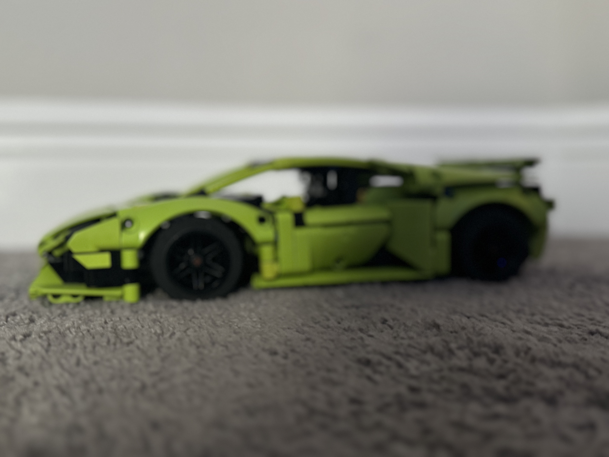
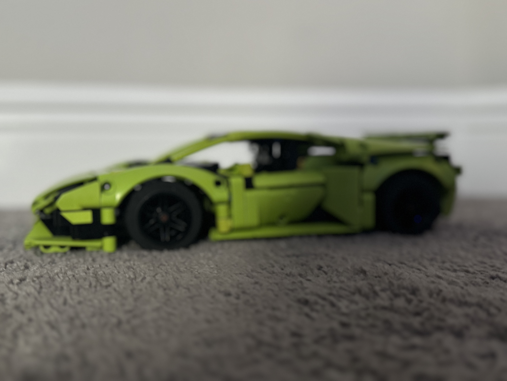

ABOUT ME:
Hey guys! My name is Ilan. I am 12 years old, and I like to code, coding is very fun because it pushes me to learn
more and to explore the logic behind modern technology. I play competetitive tennis, and I enjoy playing
basketball with my friends. I enjoy tracking hurricanes and I love weather.
Coding is a very good subject to learn and it is very useful in your life because it helps people make new apps every day,
even the laptop that I am typing on has been coded to work the way that it does.

 
